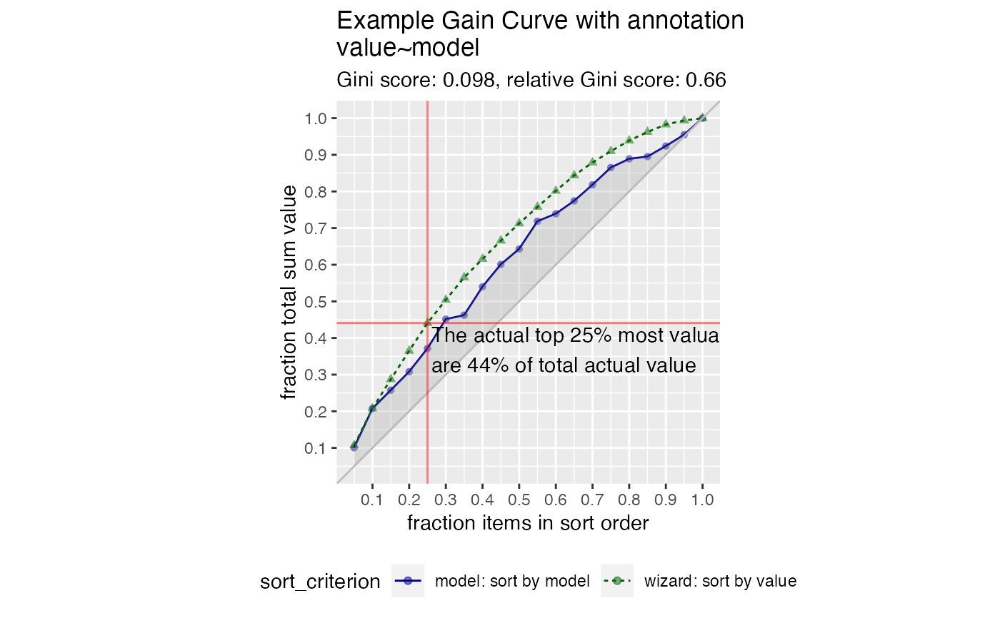
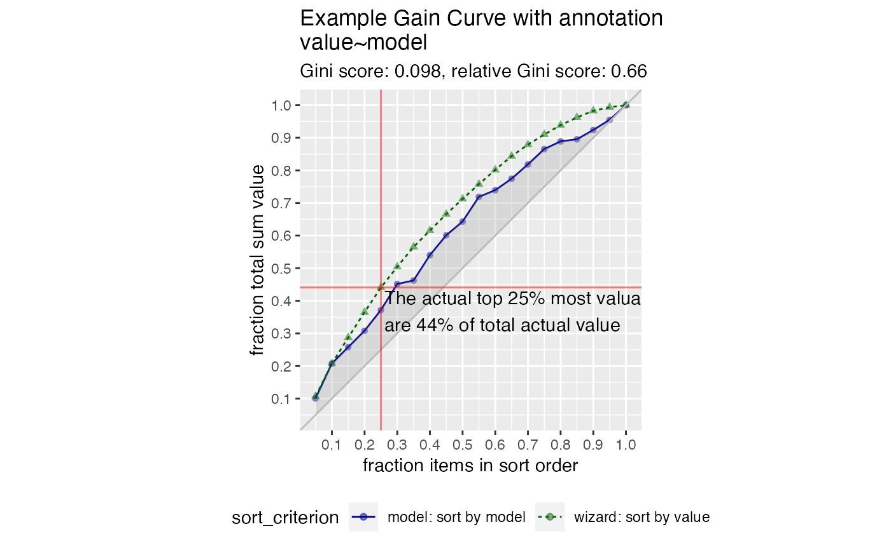

Plot the cumulative gain curve of a sort-order with extra notation
Source:R/GainCurve.R
GainCurvePlotWithNotation.RdPlot the cumulative gain curve of a sort-order with extra notation.
GainCurvePlotWithNotation(
frame,
xvar,
truthVar,
title,
gainx,
labelfun,
...,
sort_by_model = TRUE,
estimate_sig = FALSE,
large_count = 1000,
model_color = "darkblue",
wizard_color = "darkgreen",
shadow_color = "darkgray",
crosshair_color = "red",
text_color = "black"
)Arguments
- frame
data frame to get values from
- xvar
name of the independent (input or model score) column in frame
- truthVar
name of the dependent (output or result to be modeled) column in frame
- title
title to place on plot
- gainx
the point on the x axis corresponding to the desired label
- labelfun
a function to return a label for the marked point
- ...
no unnamed argument, added to force named binding of later arguments.
- sort_by_model
logical, if TRUE use the model to calculate gainy, else use wizard.
- estimate_sig
logical, if TRUE compute significance
- large_count
numeric, upper bound target for number of plotting points
- model_color
color for the model curve
- wizard_color
color for the "wizard" (best possible) curve
- shadow_color
color for the shaded area under the curve
- crosshair_color
color for the annotation location lines
- text_color
color for the annotation text
Details
This is the standard gain curve plot (see GainCurvePlot) with
a label attached to a particular value of x. The label is created by
a function labelfun, which takes as inputs the x and y coordinates
of a label and returns a string (the label).
By default, uses the model to calculate the y value of the calculated point;
to use the wizard curve, set sort_by_model = FALSE
See also
Examples
set.seed(34903490)
y = abs(rnorm(20)) + 0.1
x = abs(y + 0.5*rnorm(20))
frm = data.frame(model=x, value=y)
gainx = 0.25 # get the predicted top 25% most valuable points as sorted by the model
# make a function to calculate the label for the annotated point
labelfun = function(gx, gy) {
pctx = gx*100
pcty = gy*100
paste("The predicted top ", pctx, "% most valuable points by the model\n",
"are ", pcty, "% of total actual value", sep='')
}
WVPlots::GainCurvePlotWithNotation(frm, "model", "value",
title="Example Gain Curve with annotation",
gainx=gainx,labelfun=labelfun)
 # now get the top 25% actual most valuable points
labelfun = function(gx, gy) {
pctx = gx*100
pcty = gy*100
paste("The actual top ", pctx, "% most valuable points\n",
"are ", pcty, "% of total actual value", sep='')
}
WVPlots::GainCurvePlotWithNotation(frm, "model", "value",
title="Example Gain Curve with annotation",
gainx=gainx,labelfun=labelfun, sort_by_model=FALSE)

# now get the top 25% actual most valuable points
labelfun = function(gx, gy) {
pctx = gx*100
pcty = gy*100
paste("The actual top ", pctx, "% most valuable points\n",
"are ", pcty, "% of total actual value", sep='')
}
WVPlots::GainCurvePlotWithNotation(frm, "model", "value",
title="Example Gain Curve with annotation",
gainx=gainx,labelfun=labelfun, sort_by_model=FALSE)
